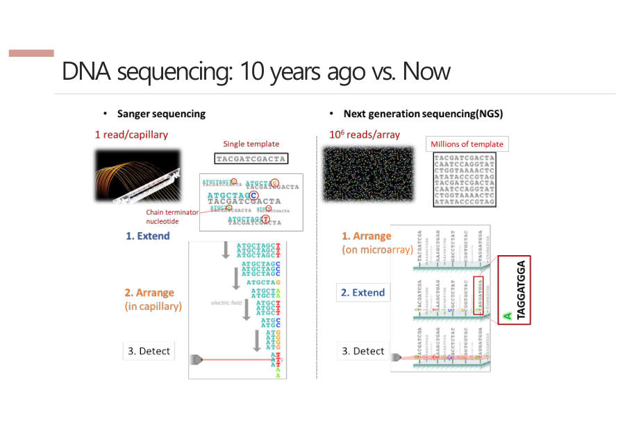

옛날 방식(Sanger)과 NGS의 차이
NGS 이전에 쓰던 방법은 Sanger(생어) 시퀀싱이에요. 먼저 Sanger가 어떻게 읽는지 쉬운 말로 볼게요. 세 단계예요.
- 증폭(Amplification) — 읽을 DNA를 PCR(Polymerase Chain Reaction)로 많이 복사해요. PCR은 DNA용 복사기예요.
- 늘리기(Extension) — 글자를 붙여 DNA를 늘려요. 형광이 달린 글자가 붙는 순간 멈춰서, 길이가 제각각인 조각이 많이 생겨요.
- 읽기(Detection) — 가는 관(캐필러리)에 흘리면 짧은 조각이 먼저 지나가요. 끝 글자의 형광 색을 순서대로 읽으면 서열이 나와요.
한 관에는 DNA 한 종류만 읽을 수 있어서 동시에 많이 읽기 어려워요. 관이 20개면 동시에 20종류가 한계예요.
Sanger는 한 사람이 책을 한 줄씩 베껴 쓰는 것과 같아요. 관 하나에 한 종류만이라 동시에 약 20개예요.
NGS는 책을 잘게 찢어 운동장에 수억 장 깔아 놓고, 드론이 위에서 한 글자씩 동시에 사진을 찍는 것과 같아요. 동시에 약 10억(10⁹)개예요.
| Sanger | NGS | |
|---|---|---|
| 순서 | 늘리기(Extend) → 관에 정렬(Arrange) → 읽기(Detect) | 먼저 판에 고정(Arrange) → 늘리기와 읽기를 동시에 |
| 한 칸 크기 | 관 지름 약 1cm | 점 하나 약 7μm |
| 동시에 | 관 1개당 1종류 (약 20개) | 판 하나에 약 10⁹개 |
크기 차이도 놀라워요. 1cm는 10,000μm(마이크로미터)라서, 한 칸이 1,000배 넘게 작아요. 작으니까 한 판에 수억 개를 깔 수 있는 거예요.
참고로 교수님이 말로는 점 크기를 약 1μm라고도 했지만, 슬라이드 숫자인 7μm로 외우세요.
NGS가 Sanger와 다른 핵심은 순서를 바꾼 것이에요. 다 만들어서 흘려보내는 대신, 판에 먼저 박아 놓고(Arrange) 그 자리에서 늘리면서(Extend) 동시에 사진(Detect)을 찍어요.

Sanger는 증폭, extension, 캐필러리를 통한 detection 순으로 진행되며 관 하나당 한 종류의 DNA만 읽어 병렬화가 어렵다. NGS는 기판에 DNA를 먼저 고정(arrangement)한 뒤 extension과 detection을 동시에 수행하며, 스팟이 μm 단위로 작아 약 10⁹개를 동시에 분석한다.
잠깐 확인 — Sanger는 왜 많은 DNA를 한꺼번에 읽기 어려운가요?
관 하나에 DNA 한 종류만 넣어 읽을 수 있고, 관의 크기도 약 1cm로 커서 많이 늘어놓을 수 없기 때문이에요.